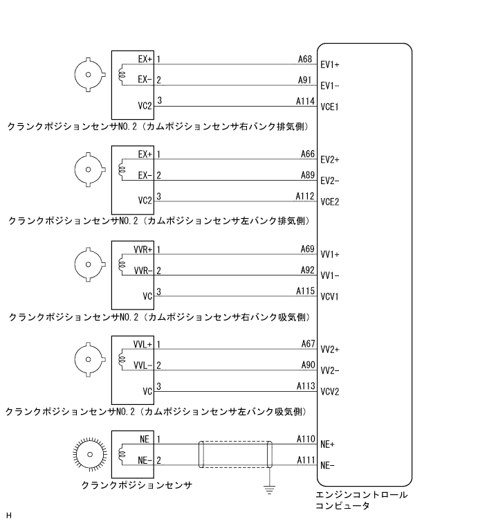
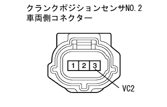
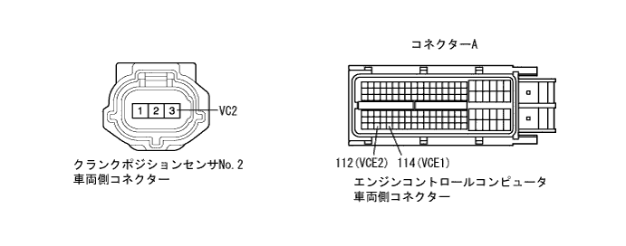
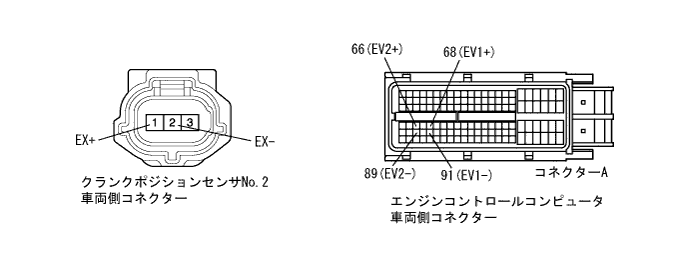

DTC P0365/18 Exhaust VVT Sensor System |
DTC P0367/18 Exhaust VVT Sensor (Low) |
DTC P0368/18 Exhaust VVT Sensor (High) |
DTC P0390/18 Exhaust VVT Sensor 2 Circuit |
DTC P0392/18 Exhaust VVT Sensor 2 (Low) |
DTC P0393/18 Exhaust VVT Sensor 2 (High) |
| DTCNo. SAE/TCCS | DTC Detection Condition
| Inspection Area |
|---|---|---|
| P0365/18 (RH bank) P0390/18 (LH bank) |
|
|
| P0365/18 P0367/18 P0368/18 (RH bank) P0390/18 P0392/18 P0393/18 (LH bank) |
|
|

| Step 1 | Read DTC |
Connect SST (TaSCAN) to DLC3.
Turn the IG ON and read the DTCs following the SST (TaSCAN) screen display. (see)
| Result | Proceed to |
|---|---|
| P0365/18, P0367/18, P0368/18, P0390/18, P0392/18, P0393/18 output | A |
| Codes other than P0365/18, P0367/18, P0368/18, P0390/18, P0392/18, P0393/18 output | B |
|
| ||||
| A | |
| Step 2 | Inspect Wire Harness and Connector (VCE1, VCE2 Voltage) |
 |
Disconnect the crankshaft position sensor NO.2 connector.
Turn IG ON.
Using SST (Toyota electrical tester), inspect the voltage between the terminals of the crankshaft position sensor NO.2 vehicle side connector.
| Tester Connection (Terminal Symbol) | Condition | Standard |
|---|---|---|
| 3 (VC2) - Body ground | IG ON | 4.5 to 5.0 V |
| Result | Proceed to |
|---|---|
| NG | A |
| OK | B |
|
| ||||
| A | |
| Step 3 | Inspect Wire Harness and Connector (Engine Control Computer - Crankshaft Position Sensor NO.2) |
ReferenceDisconnect connector A of the engine control computer.
Disconnect the crankshaft position sensor No.2 connector.
Using SST (Toyota electrical tester), measure the resistance between the terminals. (For Terminals of ECU, see)

| Tester Connection (Terminal Symbol) | Condition | Standard |
|---|---|---|
| A114(VCE1) - 3(VC2) | Always | Below 1 Ω |
| A112(VCE2) - 3(VC2) | Always | Below 1 Ω |
| Tester Connection (Terminal Symbol) | Condition | Standard |
|---|---|---|
| A114 (VCE1) and 3 (VC2) - other terminals and body ground | Always | 10k Ω or higher |
| A112 (VCE2) and 3 (VC2) - other terminals and body ground | Always | 10k Ω or higher |
|
| ||||
| OK | ||
| ||
| Step 4 | Inspect Wire Harness and Connector (Engine Control Computer - Crankshaft Position Sensor NO.2) |
ReferenceDisconnect connector A of the engine control computer.
Disconnect the crankshaft position sensor No.2 connector.
Using SST (Toyota electrical tester), measure the resistance between the terminals. (For Terminals of ECU, see)

| Tester Connection (Terminal Symbol) | Condition | Standard |
|---|---|---|
| A68(EV1+) - 1(EX+) | Always | Below 1 Ω |
| A91(EV1-) - 2(EX-) | Always | Below 1 Ω |
| A66(EV2+) - 1(EX+) | Always | Below 1 Ω |
| A89(EV2-) - 2(EX-) | Always | Below 1 Ω |
| Tester Connection (Terminal Symbol) | Condition | Standard |
|---|---|---|
| A68 (EV1+) and 1 (EX+) - Other terminals and body ground | Always | 10k Ω or higher |
| A91 (EV1-) and 2 (EX-) - Other terminals and body ground | Always | 10k Ω or higher |
| A66 (EV2+) and 1 (EX+) - Other terminals and body ground | Always | 10k Ω or higher |
| A89 (EV2-) and 2 (EX-) - Other terminals and body ground | Always | 10k Ω or higher |
|
| ||||
| OK | |
| Step 5 | Inspect Sensor Installation Area |
Inspect the tightening and installation condition of the camshaft position sensor bolt.
|
| ||||
| OK | |
| Step 6 | Inspect Camshaft |
Inspect the condition of the camshaft installation area and protrusions.
| Result | Proceed to |
|---|---|
| OK (when P0365/18, P0367/18, P0368/18 are input) | A |
| OK (when P0390/18, P0392/18, P0393/18 are input) | B |
| NG | C |
|
| ||||
|
| ||||
| A | |
| Step 7 | Perform TaSCAN Active Test (Exhaust VVT Linear Drive Bank 1) |
With the engine stopped, turn the IG ON.
Following the SST (TaSCAN) screen display, select [Active Test] - [Exhaust VVT Linear Drive Bank 1].
With the engine idling, perform the Active Test [Exhaust VVT Linear Drive Bank 1] while monitoring the data [Exhaust VVT Displacement Angle Bank 1].
|
| ||||
| OK | ||
| ||
| Step 8 | Perform TaSCAN Active Test (Exhaust VVT Linear Drive Bank 2) |
With the engine stopped, turn the IG ON.
Following the SST (TaSCAN) screen display, select [Active Test] - [Exhaust VVT Linear Drive Bank 2].
With the engine idling, perform the Active Test [Exhaust VVT Linear Drive Bank 2] while monitoring the data [Exhaust VVT Displacement Angle Bank 2].
|
| ||||
| OK | ||
| ||